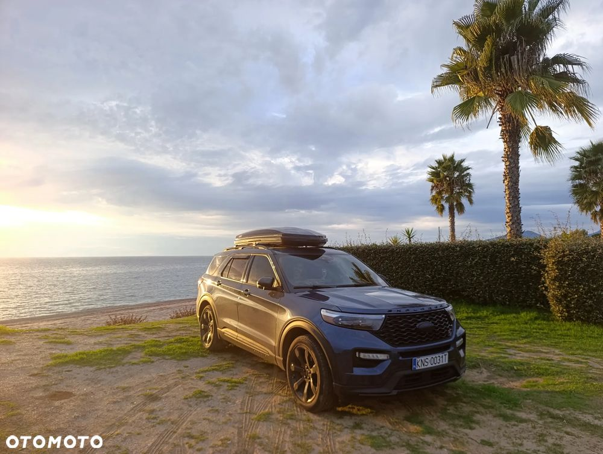
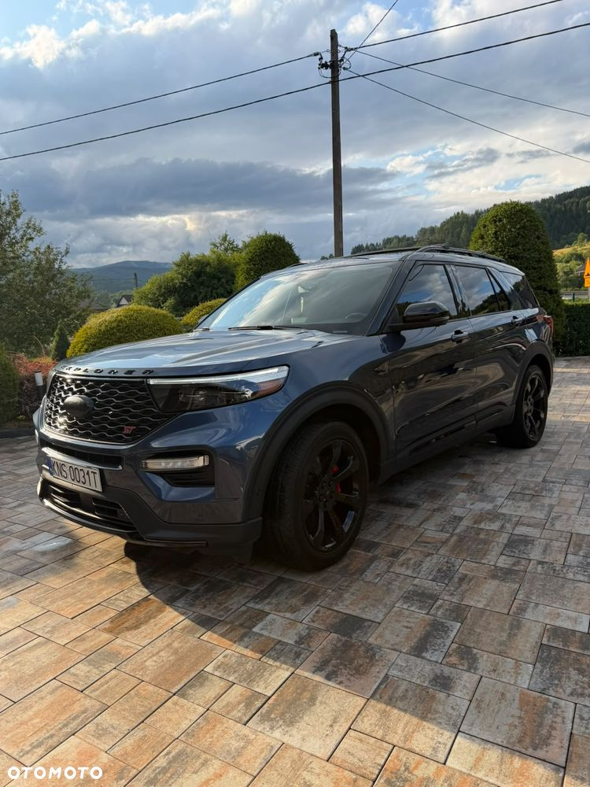
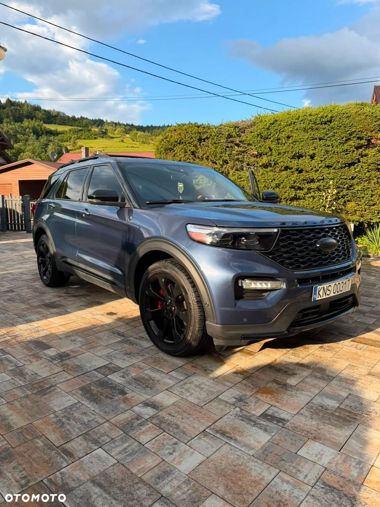
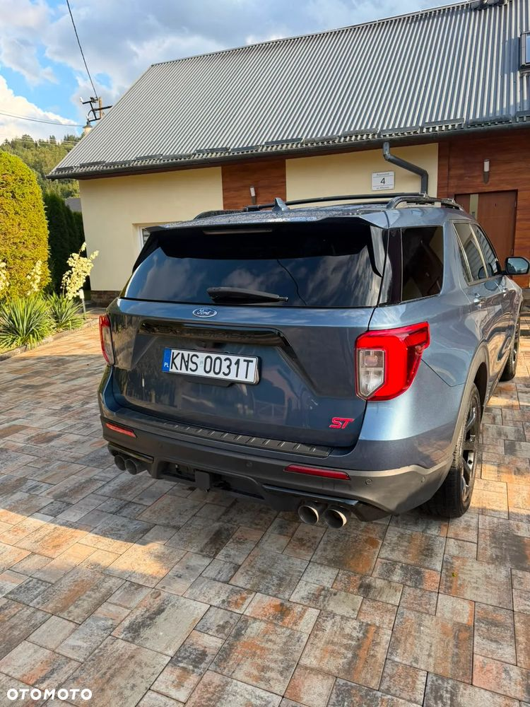
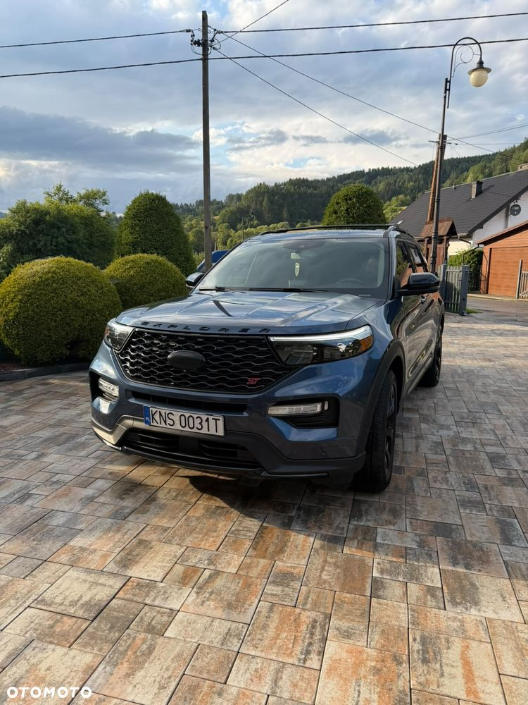
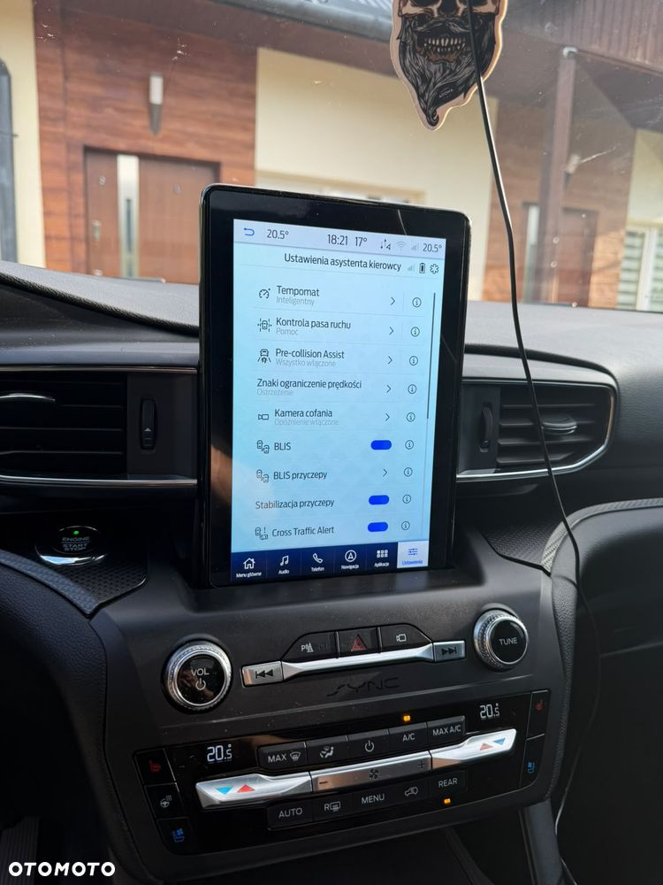
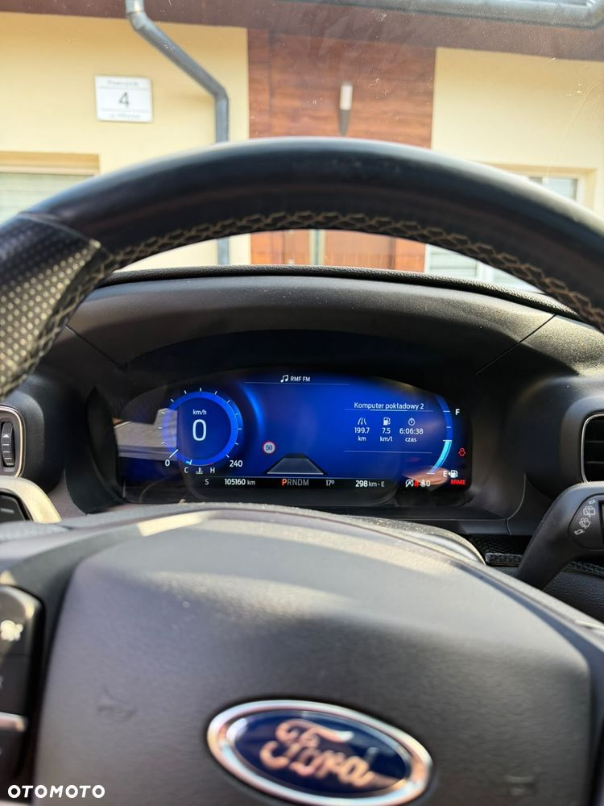
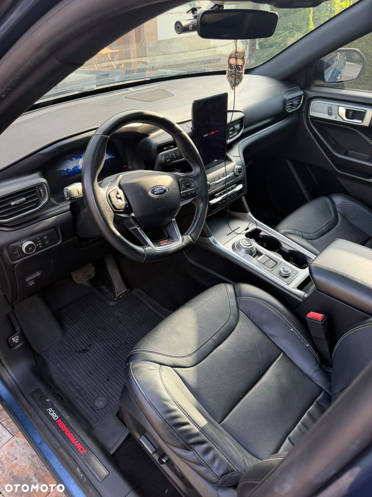
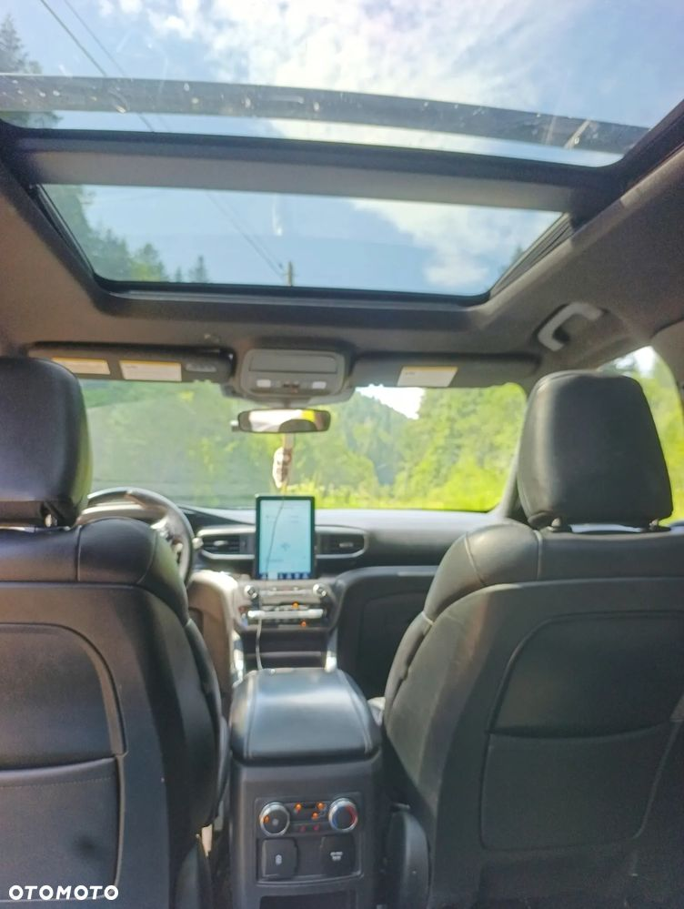
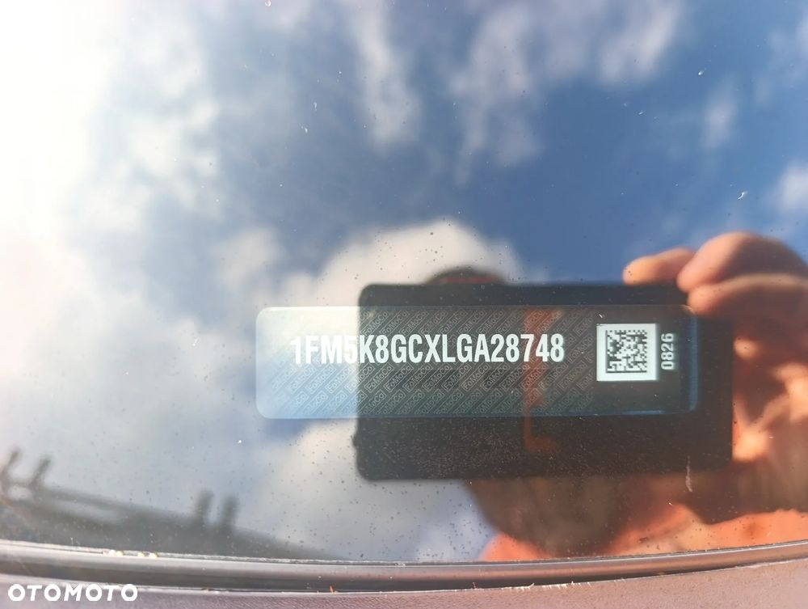

Ford Explorer ST 3.0 EcoBoost V6 400 KM /nie jest to hybryda,ale nie ma możliwości wyboru tego silnika w nagłówku.AWD | cena 110 000 tyś + VAT 23% od faktury | 105 000 km | 6 miejsc
Na sprzedaż Ford Explorer ST z 2019/2020 roku, wyposażony w benzynowy silnik 3.0 EcoBoost V6 o mocy 400 KM, automatyczną 10-biegową skrzynię biegów oraz napęd AWD (4x4). Samochód jest zadbany, bardzo bogato wyposażony i gotowy do jazdy.
Dane pojazdu:
Rok modelowy: 2020
Przebieg: 105 000 km
Silnik: 3.0 EcoBoost V6
Moc: 400 KM
Skrzynia biegów: automatyczna 10-biegowa
Napęd: AWD (4x4)
Liczba miejsc: 6
VIN: 1FM5K8GCXLGA28748
Wyposażenie:
✔ Panoramiczny dach
✔ Kamery 360°
✔ Nagłośnienie Bang & Olufsen
✔ Podgrzewane i wentylowane przednie fotele
✔ Podgrzewane tylne fotele
✔ Elektrycznie regulowane przednie fotele z pamięcią ustawień
✔ Elektrycznie składany i rozkładany trzeci rząd siedzeń
✔ Podgrzewana kierownica
✔ Adaptacyjny tempomat
✔ Apple CarPlay i Android Auto
✔ Cyfrowy zestaw wskaźników
✔ Reflektory LED
✔ Czujniki parkowania przód i tył + kamery
✔ Elektrycznie otwierana klapa bagażnika
✔ System bezkluczykowego dostępu i uruchamiania
Uruchamianie silnika na odległość
Czytanie znaków,
Aktywny tempomat, utrzymanie pasa ruchu
Dodatkowe informacje:
Wykonana profesjonalna konserwacja podwozia.
Samochód gotowy do jazdy, bez wkładu finansowego,
Możliwość sprawdzenia w dowolnym serwisie lub stacji diagnostycznej.
Cena:
110 000 zł netto
Faktura VAT 23%
Zapraszam do kontaktu telefonicznego oraz na oględziny i jazdę próbną. Samochód prezentuje się bardzo dobrze i dzięki bogatemu wyposażeniu zapewnia wysoki komfort podróżowania i niezłe osiągi.









